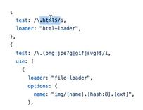
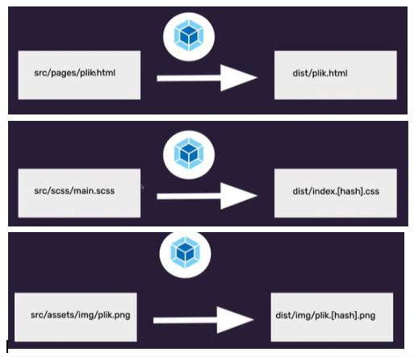

Webpack
Webpack wstęp
Webpack - ogarniacz, podstawowe narzędzie frontendowca,
developerskie, może automatyzować procesy, ułatwia
development,używają go wiodące frameworki i biblioteki, warto znać
podstawy. Aktualnie działa w najnowszej wersji bez konfiguracji
nawet. Muszę umieć uruchomić.
Bundle (pakować) your scripts, images, styles, assets. Na bazie tego
co mu podamy oddaje gotowe pliki, które można wrzucić na serwer,
przyjazne dla przeglądarki, które przeglądarka rozumie. Pakuje nam
wszystko w jeden plik, te wszystkie moduły potem kompresuje.
Poczytaj dokumentację webpacka. Nie muszę jeszcze umieć napisać
konfiguracji webpacka.
Z czego składa się konfiguracja webpacka?
Możemy go zainstalować za pomocą narzędzi npmowych. Kopiujemy
komendy.
http://webpack.js.org npx webpack w terminalu, błąd nie może znaleźć
plików, nie potrzebuje pliku konfiguracyjnego. Ma swoje domyślne
rzeczy: plik wejściowy entry domyślnie: ./src/index.js
w codzie tworzymy folder src a w nim plik index.js
piszemy prosty skrypt i dostajemy w terminalu, że w konfiguracji nie
ma jeszcze trybu ale już na zwraca plik main.js W sensie tworzy się
katalog dist a w tym katalogu main.js. i tam ten kod jest dla nas
niezrozumiały ale dla przeglądarki tak. I on już jest zminifikowany
czy coś.
Zakładamy index.html i podpinamy tego main.js.
Output domyślnie: ./dist/main.js plik wyjściowy, dista nie
edytujemy.
Importujemy moment.
W index.js import moment from ‘moment’;
console.log(moment);
w terminalu wywołujemy webpacka, npx webpack, żeby te zmiany zostały
przetrawione.
dokumentacja moment.js
zwraca datę w danym formacie
ten moment działa dzięki webpackowi, pozwala korzystać z
zewnętrznych paczek, sam wszystko ładnie łączy, dorzuca itp.
Możemy robić operacje na plikach jsowych, które są domyślne.
Ale webpack posiada też coś co nazywa się loaderami - dodatkowe
opcje webpackowe pozwalające na operacje na plikach innych niż JS,
na wczytywanie plików innych niż JS, jeżeli chcemy ogarnąć style
albo sprawdzić ścieżki do obrazków i je skompresować.
Przykładowy plik konfiguracyjny z loader, sekcja rules, to są
wyrażenia regularne, loadery działają na konkretne pliki do js,
obrazków czy htmla.

Plugin - pozwala na wykonywanie różnych operacji, raczej nie
wczytywanie czy modyfikowanie raczej np kopiowanie plików, pluginy
też są paczkami z npm. Kopiujemy pluginy, pozwalają nam na tworzenie
podstron, kopiowanie wszystkiego z katalogu public do katalogu dist.
Mode - tryby: development - developerski, coś co uruchamiamy u
siebie na kompie, praca nad stroną aplikacją, production -
produkcyjny - oddane po testach do działania, to co leci na serwer,
to co ludzie widzą.
Developerski dla webpacka
npx webpack --mode development
już nie ma błędu, że nie podaliśmy trybu
Możliwości webpacka rozszerzamy za pomocą paczek z NPM, np. pluginy
instalowane za pomocą npma, dużo jest wtyczek do webpacka,
konfiguracji pewnie też.
WTF Webpack StarterKit - pierwsze uruchomienie
Szablon z, którego możemy skorzystać przy tworzeniu projektów.
Webpack starter kit:
-serwer lokalny z autoodświeżaniem, to co robi live server, będziemy
uciekać od wtyczek na rzecz webpacka
-wsparcie dla scss i sourcemap
-minifikacja, optymalizacja, usuwanie zbędnych znaków
-babel, pozwala na korzystanie z najnowszych funkcji js które są
definiowane w EcmaScript, kod jest zmieniany tak, żeby działał też
na starszych przeglądarkach za pomocą zestawu reguł
-publikacja na github pages
zakładamy repozytorium, łączymy z dyskiem git clone
https://github.com/maciejkorsan/wtf-webpack-starter/generate
npm install
npm run start - uruchamia się webpack dev server, za każdym razem
jak zaczynamy pracę
info o adresie naszej strony: http://localhost:8080/
możemy wyjść z serwera za pomocą ctr c i serwer przestaje działać
src to źródło naszej strony, tutaj pracujemy
ścieżki podajemy względem katalogu src, względem plików źródłowych
nie serwerowych
nie ma katalogu dist bo jest uruchomiony w trybie developerskim bez
trybu zapisu plików, trzyma te pliki w pamięci i tam to się wszystko
wykonuje
najlepiej przykleić nasz index do tego co już jest
usuwamy powiązania ze skryptami i stylami, nie potrzebujemy
odniesień
pamiętać żeby podmienić ścieżki
w index.js podpinamy style w package json mamy 3 skrypty: start,
build, publish
npm run build tworzy się katalog dist, katalog wynikowy
Webpack StarterKit - dodawanie nowych plików, sourcemapy
Jak tworzymy nową podstronę to musimy zmodyfikować
webpack.common.js, zmieniamy nazwy na nazwy pliku, i ścieżkę. po
zmianie konfiguracji webpacka musimy zrestartować serwer
nie trzeba definiować stylów i skryptów
jeśli chcemy dołączyć jeden niż więcej plik javascriptowy do strony,
albo coś unikalnego do strony, osobny plik na jedną podstronę w js.
musimy to zdefiniować w entry wtedy zostanie skopiowane do dista
chunks: tablice , podajemy te js-y, które mają nam wyskoczyć
dobrze nazywać te pliki jsowe tak samo jak htmlowe
w index.js importujemy plik ze stylami, one nie lądują w js ale w
osobnym jsowym po wywołaniu dista
w main.scss importujemy modules/hello.scss
@ import”~normalize.css” ten plik cssowy jest importowany z node
modules, zobaczymy to w packit json, trzeba pobrać paczkę i dołączyć
z tym znaczkiem ~ w ten sposób importujemy rzeczy w sassie z node
modules
albo też import zmiennych sassowych _variables.scss
sourcemapa
source -> pages
i widzimy te style dokładnie w którym miejscu tym pliku w którym
pracujemy developerskim jest ta linijka tak samo z jsowymi
widzimy
generalnie chodzi o to, że widzimy pliki dokładnie tak jak mamy w
edytorze tego na produkcję nie wrzucamy
WTF Webpack StarterKit - budowanie projektu i publikacja
npm run build
tworzy się katalog dist, jest wynikiem naszej pracy, zawartość tego
katalogu publikujemy na serwerze, pracując wcześniej robiliśmy
właśnie taki katalog, to co idzie na serwer ta wersja produkcyjna
tego katalogu nie commitujemy dodajemy do .gitignore
katalog public - pliki, które mają być wrzucone na serwer bez
mielenia ich webpackiem np. robots.txt blokuje robotom z
przeglądarki dostęp do naszej strony albo pozwalać na indexowanie,
favicony, ale pamiętać, że w html podajemy dobrą ścieżkę
wszystko z public kopiowane jest na dist

Nie edytujemy nic w katalogu dist
My chcemy trzymać w repozytorium tylko kod, który jest potrzebny do
zbudowania naszej strony.
Master branch, pokaże nam się zawartość pliku read me ale my chcemy
naszą stronę robimy npm run publish, ta komenda korzysta z narzędzia
o nazwie gh pages, to narzędzie kopiuje naszą zawartość do osobnej
gałęzi w gicie, żeby tam trzymać wygenerowaną stronę ale żeby nie
była to główna gałąź na której pracujemy
potem w gh pages zmieniamy na gh pages branch
potem widzimy, że stworzyła się druga gałąź, mamy teraz 2 branche
push zwykły nie zaktualizuje nam tego dlatego to trzeba ręcznie
kiedy chcemy już ją opublikować
Obsługa błędów, czytamy błędy